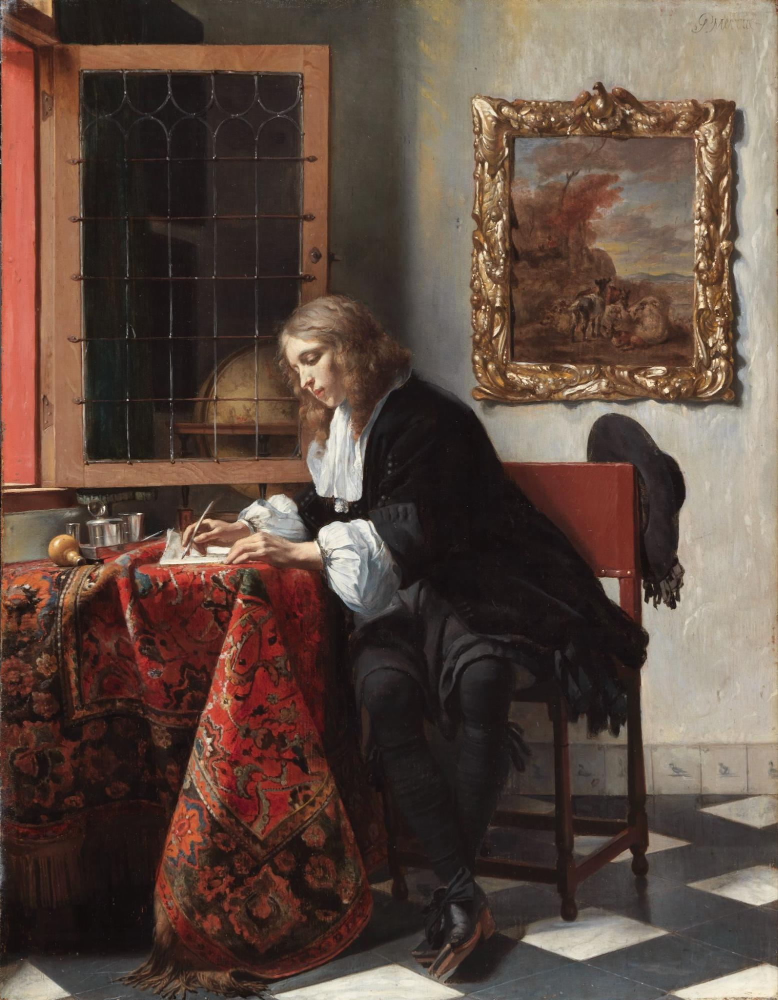
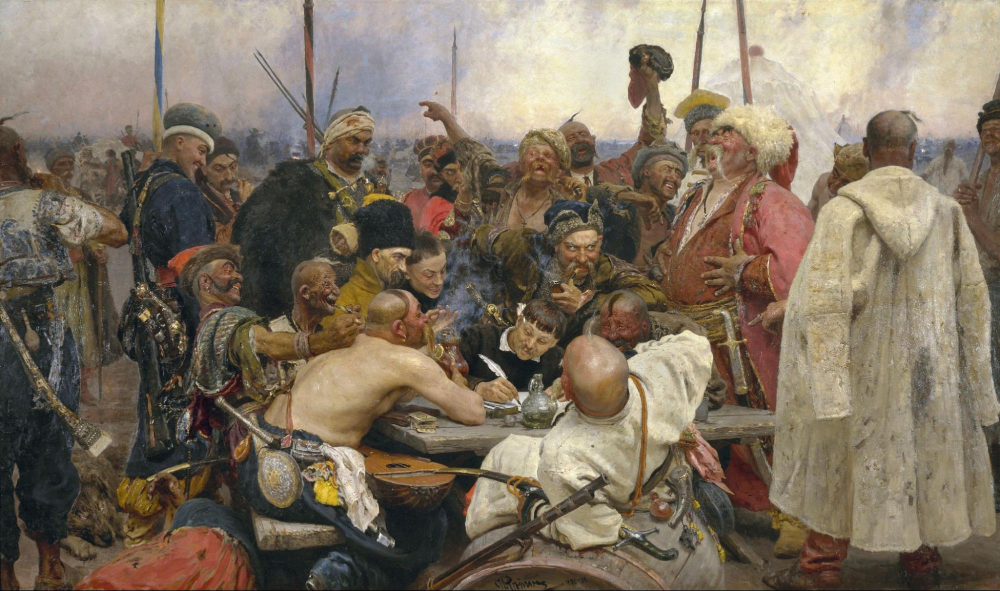

Writing (a note or a letter)

Throughout the novel, the rather benign activity of writing a note takes on great significance, as characters are constantly writing to one another through pen and paper. The novel begins with two notes, one addressed to Stepan Oblonsky (though ultimately read by Dolly Oblonskaya) from the French governess, and the other written by the English governess, who “had quarrelled with the housekeeper and written a note to a friend, asking her to find her a new position” (3). This highlights two important aspects of the act of writing a note in Anna Karenina: that the author of each note might be writing in a language other than Russian, and always with a specific audience in mind. Less so than in Tolstoy’s War and Peace, which features “long letters entirely in French, as well as official dispatches” (Pevear and Volokhonsky v), the novel is strewn with letters that are certainly written in other languages but transmitted to the reader in Russian. Take, for example, Alexei Karenin’s letter to Anna regarding his plans to forgo a divorce in Part 3, Chapter 14. Karenin’s approach and intentions are shared with the reader as follows: “Placing his elbows on the desk, he cocked his head to one side, thought for a minute, then began to write, without pausing for a second. He wrote without addressing her, and in French, using ‘vous’ as a pronoun, which does not have the same cold character it does in Russian” (287). Writing a letter to Anna is a meaningful event for Karenin, one for which he sits up and hopes to convey his thoughts in the very form of his writing. Tolstoy provides the reader with an incredible degree of information regarding this activity. As Karenin thinks to himself, “there was not a single harsh word or reproach, but nor was there any lenience either. Above all, there was a golden bridge for her return” (288), the reader sees the psychological significance that writing a note and letter has in the novel beyond mere communication, both in what is explicitly said and what is omitted. One learns that Karenin writes and then re-reads his letter in Anna’s voice, hoping that she will pick up on the cues laid for her in his words.
A third aspect which might be taken into account is the degree of urgency with which characters hope that their words will be read by their recipient. In her final hours, Anna writes Vronsky a note and a telegram, and their arrival is a matter of life and death. Firstly, she sends a note stating the following: “It’s all my fault. Come back home, as we need to talk things over. For heaven’s sake come—I’m frightened” (756). Shortly thereafter, while thinking about her next step, the reader witnesses her thought process as she remembers another way of communicating with him: “‘Oh, and I can wire him too.’ And she wrote out a telegram: ‘I must talk to you, come at once’” (758). Knowing so much about Anna’s mental and psychical state while writing both, one is invited to compare her plea for Vronsky’s presence to his own curt response, a telegram, for which his thought process behind his writing is nearly fully omitted: “I cannot come before ten o’clock. Vronsky” (763). But not all is fully omitted by the narrator, who provides one bit of insight into Vronsky’s writing, stating that Anna “did not realize that his telegram was an answer to her telegram, and that he had not received her note yet” (763). Possibly meant to vindicate Vronsky, the scene reflects the intense mental processes involved in writing a note or letter.

Works Cited
- Pevear, Richard, and Larissa Volokhonsky. "Introduction." War and Peace, Vintage, 2008.
- Tolstoy, Leo. Anna Karenina. Translated by Rosamund Bartlett, Oxford University Press, 2014.